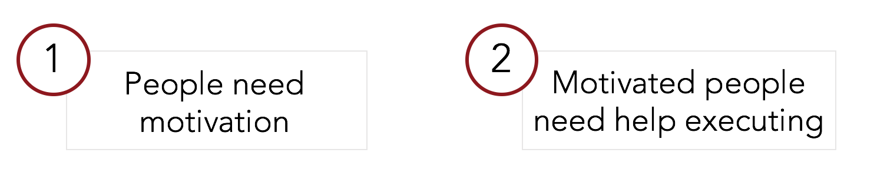
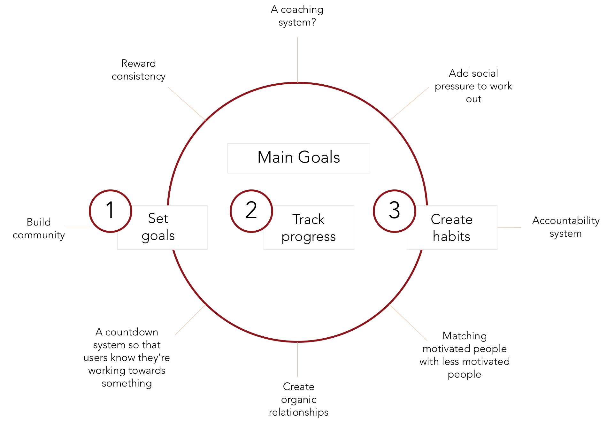
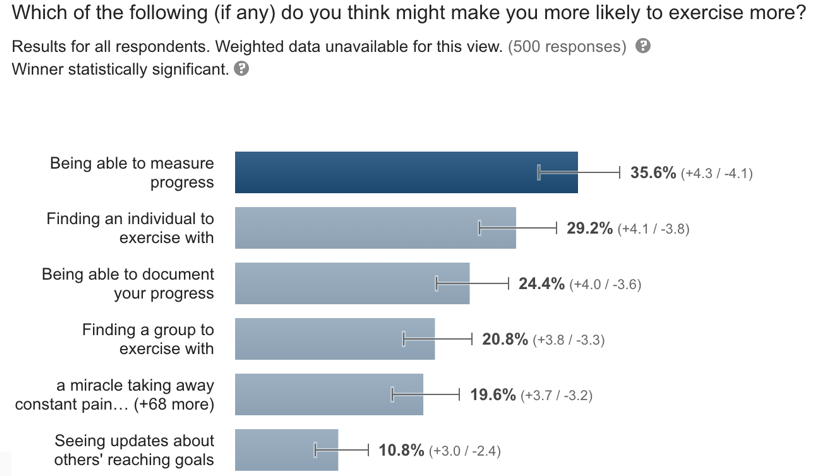
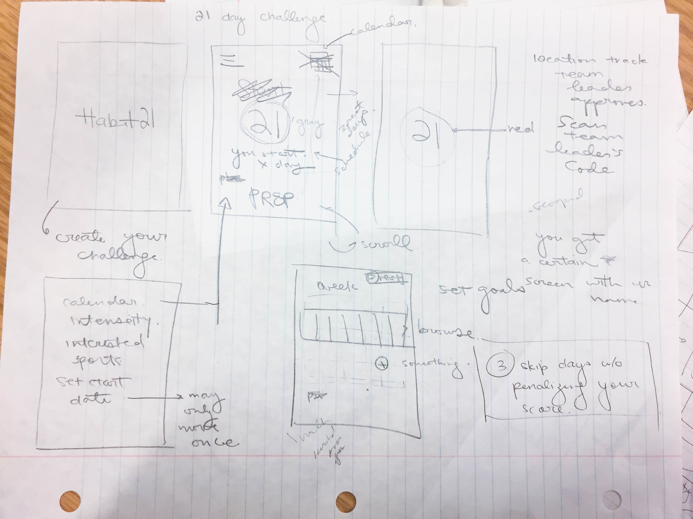
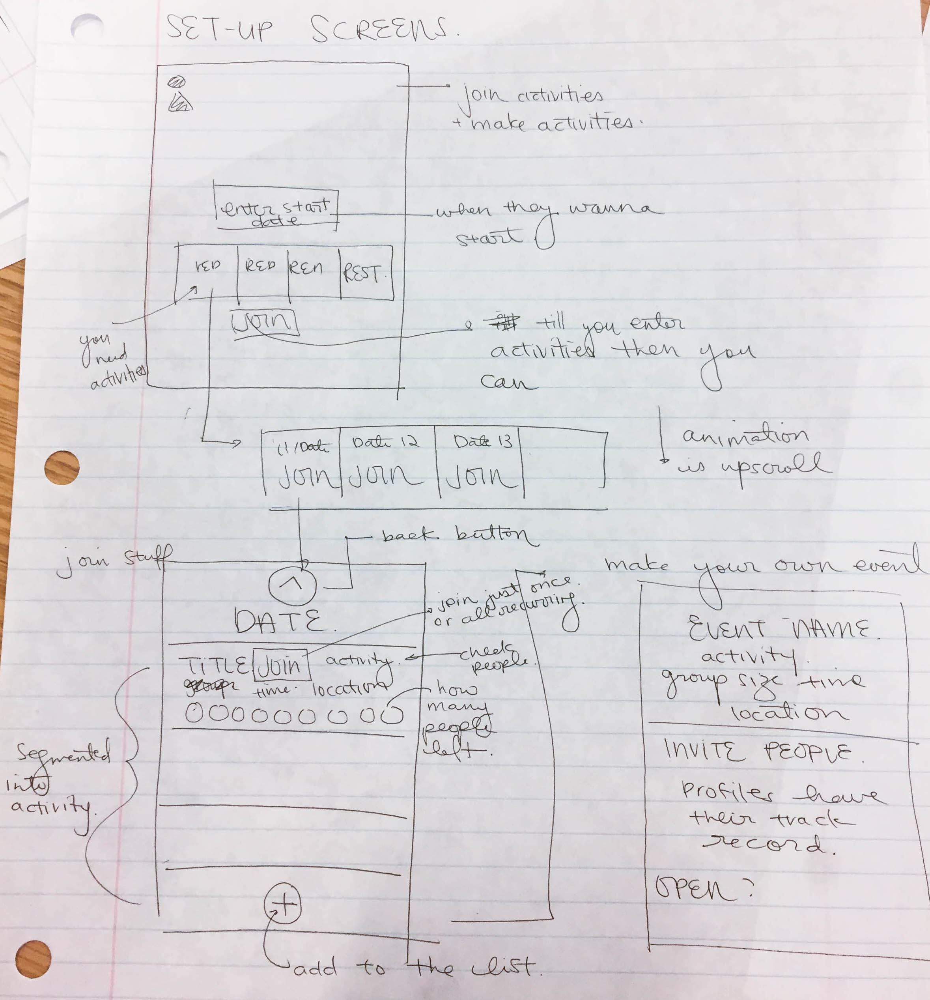
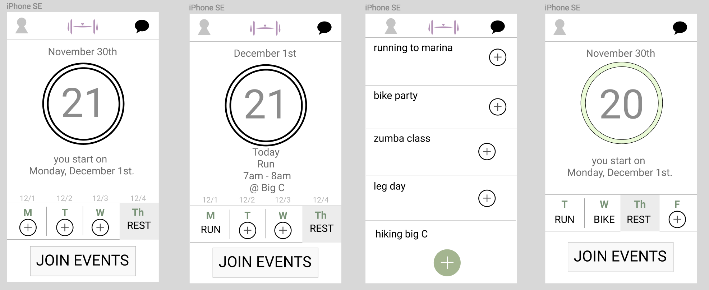

How do we get people to consistently exercise?
We used the RITE method to prototype this app. Through surveys, interviews, and heuristic evaluations, we iterated our way to a hi-fi prototype.
We needed to find the intersection of what our users needed and what we could accomplish.
From our interviews with a group of people who already worked out regularly (found at the gym) and others who didn’t work out regularly but would like to, along with 2 rounds of surveys we released, we categorized our potential user problems into two camps:
Given that intrinsic motivation is a very difficult process to address, we focused on the more feasible challenge: targeting motivated people who need help executing.
From our research, we concluded that there were three main things we wanted our app to do as well as how we were going to do it.
 We started using pop on our lo-fi prototypes, testing out high-level concepts on our users in rapid iterations.
 Then we took our revisions to Figma, where we began making specific design choices for the flow of the app. Next we went to figma, collabing
Next, we used Sketch to make our screens for our inVision prototype.
Here are just a handful of areas our product benefited with user testing.
UX research and the power of heuristic evaluations. It doesn’t take 100 people to inform me that the flow of my app is awkward before I'm convinced that something I'm doing is confusing users. 2 or 3 people giving the same feedback is enough to have me iterating.